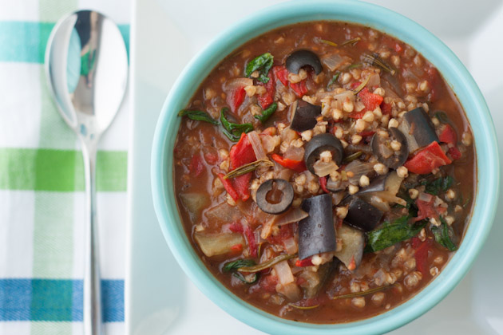

Ingredients:
1 tablespoon extra-virgin olive oil
1 large yellow onion, diced
2 shallots, finely chopped
3 garlic cloves, minced
6 cups gluten-free, yeast-free vegetable broth
28 ounces whole tomatoes
1 1/2 cups raw buckwheat groats, rinsed
2 tablespoons balsamic vinegar
2 sprigs fresh rosemary
1/2 teaspoon dried marjoram
2 cups chopped eggplant
1 cup (300 mL jar) roasted red peppers, drained and cut into strips
1 cup baby spinach
1/2 cup black olives, pitted and sliced
1/2 teaspoon sea salt
Freshly ground black pepper, to taste
Directions:
- Heat oil in a large saucepan on medium-high heat.
- Add onion, shallots and garlic and saute until soft and translucent, about 10 minutes.
- Add broth, tomatoes, buckwheat, vinegar, rosemary and marjoram. Cover, bring to a boil and reduce heat to low and simmer until the buckwheat
is tender, about 20 minutes.
- Stir in the chopped eggplant 10 minutes in.
- When complete, stir in the roasted red peppers, spinach, and olives. Allow to cook until heated through, season with salt and freshly ground pepper.
- Remove rosemary sprigs before serving.